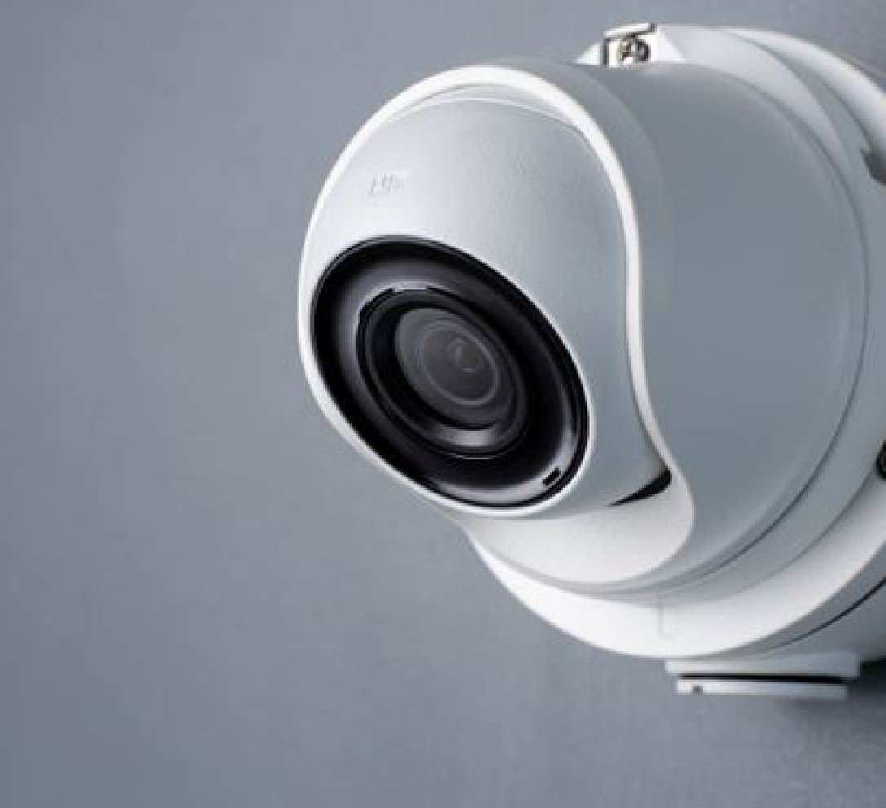

在基礎的防盜監控工程中, 我們會給業主了解每支監視器的攝影範圍,最適用的攝影機型號等等,我們堅持規畫出最有效率的監視器數量來達到”用最少,無死角”的成績. 隨著A.I.的崛起，羿鈞與其夥伴在監控領域也投入了大量的成本在其中，目前嶄新的成果如下。 自動檢查人員安全,規範行為; 人員是否依循安全SOP著裝,施工; 簡單化複雜的槽車作業; 辨識非活體/動物的AI已降低誤報率; 檢測商品瑕疵，利用畫面呈現計算晶片良率; Undefined 車輛進場路線追蹤; 物品安檢掃描EX:手機,紙張等等。 監控已不是過去單純的監視而已，他現在更是業務上的輔助，即使市面上都還沒有人做，我們都有不同領域的專業合作夥伴可以一起打造量身訂做的方案， 我們其中一個夥伴是這麼說的，”萬物皆可辯，只要先訓練”，我們期待與您的合作，讓我們透過不斷學習進步的監控系統架構幫助您的事業更安全,更有效率!
